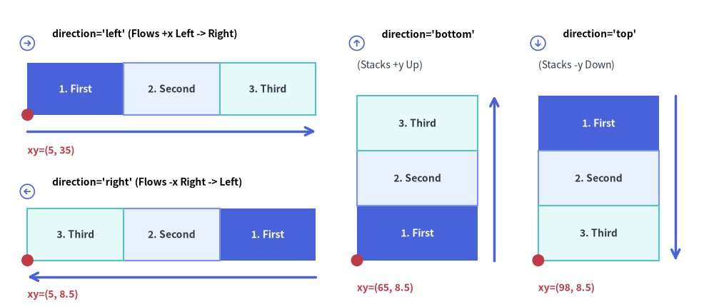
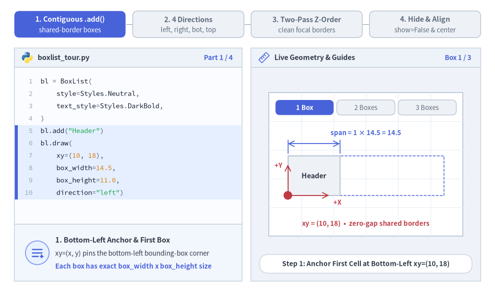
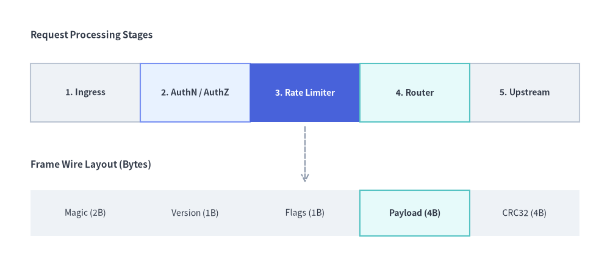
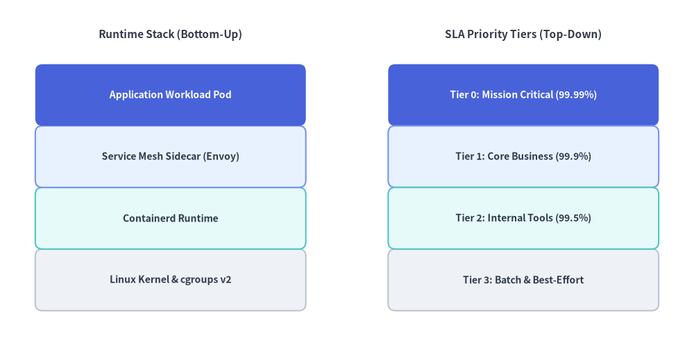

BoxList（ボックスリスト）
BoxList コンポーネントは、水平軸または垂直軸に沿って隙間なく連続する矩形カード列を描画します。
カスタムスタイルを指定した要素は自動的に第 2 パスで描画されるため、隣接するデフォルトボックスの上に枠線がきれいに重なり、メモリ／パケット構造、ステージシーケンス、垂直方向の機能スタックの表現に最適です。

Source Code
from drawlib.canvas import save, setup
from drawlib.icons import phosphor
from drawlib.lines import line
from drawlib.shapes import circle
from drawlib.smartarts import BoxList
from drawlib.styles import Styles
from drawlib.text import text
setup(width=130, height=56)
bl = BoxList(
style=Styles.Neutral,
text_style=Styles.DarkBold.patch(text_size=10.0),
)
bl.add("1. First", style=Styles.PrimaryFlat, text_style=Styles.WhiteBold.patch(text_size=10.0))
bl.add("2. Second", style=Styles.PrimaryNeutral)
bl.add("3. Third", style=Styles.SecondaryNeutral)
# 1. Top-Left Panel: direction="left" (flows +x from left to right)
phosphor.arrow_circle_right(xy=(5.0, 48.0), width=3.4, style=Styles.PrimaryFlat)
text((9.5, 49.7), "direction='left' (Flows +x Left -> Right)", style=Styles.BlackBold.patch(text_size=10.0, halign="left"))
bl.draw(xy=(5.0, 35.0), box_width=17.5, box_height=9.5, direction="left")
line((5.0, 32.0), (57.5, 32.0), arrow_head="->", style=Styles.PrimaryBold)
circle((5.0, 35.0), radius=1.1, style=Styles.DangerFlat)
text((5.0, 28.5), "xy=(5, 35)", style=Styles.DangerBold.patch(text_size=10.0, halign="left"))
# 2. Bottom-Left Panel: direction="right" (flows -x from right to left)
phosphor.arrow_circle_left(xy=(5.0, 21.0), width=3.4, style=Styles.PrimaryFlat)
text((9.5, 22.7), "direction='right' (Flows -x Right -> Left)", style=Styles.BlackBold.patch(text_size=10.0, halign="left"))
bl.draw(xy=(5.0, 8.5), box_width=17.5, box_height=9.5, direction="right")
line((57.5, 5.5), (5.0, 5.5), arrow_head="->", style=Styles.PrimaryBold)
circle((5.0, 8.5), radius=1.1, style=Styles.DangerFlat)
text((5.0, 2.3), "xy=(5, 8.5)", style=Styles.DangerBold.patch(text_size=10.0, halign="left"))
# 3. Middle Panel: direction="bottom" (stacks +y upward from bottom)
phosphor.arrow_circle_up(xy=(65.0, 48.0), width=3.4, style=Styles.PrimaryFlat)
text((69.5, 49.7), "direction='bottom'", style=Styles.BlackBold.patch(text_size=10.0, halign="left"))
text((65.0, 44.0), "(Stacks +y Up)", style=Styles.Dark.patch(text_size=10.0, halign="left"))
bl.draw(xy=(65.0, 8.5), box_width=22.0, box_height=10.0, direction="bottom")
line((90.0, 8.5), (90.0, 38.5), arrow_head="->", style=Styles.PrimaryBold)
circle((65.0, 8.5), radius=1.1, style=Styles.DangerFlat)
text((65.0, 3.5), "xy=(65, 8.5)", style=Styles.DangerBold.patch(text_size=10.0, halign="left"))
# 4. Right Panel: direction="top" (stacks -y downward from top)
phosphor.arrow_circle_down(xy=(98.0, 48.0), width=3.4, style=Styles.PrimaryFlat)
text((102.5, 49.7), "direction='top'", style=Styles.BlackBold.patch(text_size=10.0, halign="left"))
text((98.0, 44.0), "(Stacks -y Down)", style=Styles.Dark.patch(text_size=10.0, halign="left"))
bl.draw(xy=(98.0, 8.5), box_width=22.0, box_height=10.0, direction="top")
line((123.0, 38.5), (123.0, 8.5), arrow_head="->", style=Styles.PrimaryBold)
circle((98.0, 8.5), radius=1.1, style=Styles.DangerFlat)
text((98.0, 3.5), "xy=(98, 8.5)", style=Styles.DangerBold.patch(text_size=10.0, halign="left"))
save()
1. 基本概念と基本的な使い方
BoxList は .add(...) によって隙間なく連続する矩形セル列を構築し、デフォルトで複数ボックス全体のバウンディングボックスの左下角 (x, y)（align="center" の場合は中央）を基準に配置します。4 つの軸方向（"left", "right", "bottom", "top"）への展開、カスタム強調枠が隣接エッジ上にきれいに重なる自動 2 パス Z オーダー描画、および他のスロット位置をずらさない .items[i] の非表示化やスケーリングに対応しています。

Source Code
from __future__ import annotations
from drawlib.anim import Animation
from drawlib.canvas import save, setup
from drawlib.icons import code as code_icons
from drawlib.icons import phosphor
from drawlib.lines import line
from drawlib.shapes import circle, rectangle
from drawlib.smartarts import BoxList, SourceCode, SourceCodeStyles
from drawlib.styles import Styles
from drawlib.text import text
W, H = 138.0, 82.0
setup(width=W, height=H)
anim = Animation(fps=10.0, loop=0)
CODE_TEXT_SIZE = 10.0
PT_TO_CANVAS = W / 720.0
FONT_CANVAS = CODE_TEXT_SIZE * PT_TO_CANVAS
LINE_H = FONT_CANVAS * 1.8
PAD_Y = FONT_CANVAS * 1.2
CODE_STYLES = SourceCodeStyles.get("default", font_lang="en", text_size=CODE_TEXT_SIZE).patch(
box_style=Styles.Neutral.patch(shape_fill_color=(0, 0, 0, 0), shape_line_width=0),
)
PANE_HEADER = Styles.Neutral.patch(
shape_fill_color=(238, 243, 250),
shape_line_color=(203, 213, 225),
shape_line_width=1.2,
shape_r=0.0,
)
EDITOR_BODY = Styles.Neutral.patch(
shape_fill_color=(250, 252, 255),
shape_line_color=(203, 213, 225),
shape_line_width=1.2,
shape_r=0.0,
)
TAKEAWAY_BODY = Styles.Neutral.patch(
shape_fill_color=(242, 246, 253),
shape_line_color=(203, 213, 225),
shape_line_width=1.2,
shape_r=0.0,
)
STUDIO_BODY = Styles.Neutral.patch(
shape_fill_color=(239, 243, 249),
shape_line_color=(203, 213, 225),
shape_line_width=1.2,
shape_r=0.0,
)
PART_ITEMS = [
("1. Contiguous .add()", "shared-border boxes"),
("2. 4 Directions", "left, right, bot, top"),
("3. Two-Pass Z-Order", "clean focal borders"),
("4. Hide & Align", "show=False & center"),
]
def draw_step_bar(active_part: int) -> None:
"""Draw top 4-part progress bar (active_part is 1..4)."""
pill_w = 31.0
pill_h = 7.4
gap = 2.0
start_x = 4.0 + pill_w / 2.0
cy = 75.2
for idx, (label, sublabel) in enumerate(PART_ITEMS, start=1):
cx = start_x + (idx - 1) * (pill_w + gap)
if idx > 1:
prev_cx = cx - (pill_w + gap)
line(
(prev_cx + pill_w / 2.0 + 0.2, cy),
(cx - pill_w / 2.0 - 0.2, cy),
style=Styles.PrimaryBold if idx <= active_part else Styles.MutedThin,
)
if idx == active_part:
st = Styles.PrimaryFlat.patch(shape_r=1.4)
tst = Styles.WhiteBold.patch(text_size=10.3)
sub_tst = Styles.White.patch(text_size=9.5)
elif idx < active_part:
st = Styles.PrimaryNeutral.patch(shape_r=1.4, shape_line_width=1.1)
tst = Styles.PrimaryBold.patch(text_size=10.3)
sub_tst = Styles.Primary.patch(text_size=9.5)
else:
st = Styles.Neutral.patch(shape_r=1.4, shape_line_width=1.1)
tst = Styles.MutedBold.patch(text_size=10.3)
sub_tst = Styles.Muted.patch(text_size=9.5)
rectangle((cx, cy), width=pill_w, height=pill_h, style=st)
text((cx, cy + 1.35), label, style=tst)
text((cx, cy - 1.55), sublabel, style=sub_tst)
def draw_left_pane(
active_part: int,
code_lines: list[str],
hl_range: tuple[int, int],
icon_fn: object,
summary_title: str,
summary_line1: str,
summary_line2: str,
) -> None:
"""Draw left Python code editor + bottom concept takeaway card."""
x0, w = 4.0, 63.5
cx = x0 + w / 2.0
top_y = 63.2
header_h = 5.4
editor_h = 43.8
takeaway_h = 15.8
rectangle((cx, top_y + header_h / 2.0), width=w, height=header_h, style=PANE_HEADER)
code_icons.python((x0 + 3.6, top_y + header_h / 2.0), width=3.4, style=Styles.Neutral)
text(
(x0 + 6.5, top_y + header_h / 2.0),
"boxlist_tour.py",
style=Styles.DarkBold.patch(text_size=10.2, halign="left"),
)
text(
(x0 + w - 2.6, top_y + header_h / 2.0),
f"Part {active_part} / 4",
style=Styles.PrimaryBold.patch(text_size=9.8, halign="right"),
)
rectangle((cx, top_y - editor_h / 2.0), width=w, height=editor_h, style=EDITOR_BODY)
hl_start, hl_end = hl_range
hl_top = top_y - PAD_Y - hl_start * LINE_H
hl_bot = top_y - PAD_Y - (hl_end + 1) * LINE_H
hl_cy = (hl_top + hl_bot) / 2.0
hl_h = hl_top - hl_bot
rectangle(
(cx, hl_cy),
width=w - 0.6,
height=hl_h,
style=Styles.Neutral.patch(shape_fill_color=(229, 239, 255), shape_line_width=0),
)
rectangle(
(x0 + 0.55, hl_cy),
width=0.9,
height=hl_h,
style=Styles.PrimaryFlat.patch(shape_line_width=0),
)
SourceCode.draw(
xy=(x0, top_y),
width=w,
code="\n".join(code_lines),
styles=CODE_STYLES,
code_lang="python",
show_linenum=True,
align="top_left",
)
take_cy = 3.6 + takeaway_h / 2.0
rectangle((cx, take_cy), width=w, height=takeaway_h, style=TAKEAWAY_BODY)
circle(
(x0 + 6.4, take_cy),
radius=3.3,
style=Styles.PrimaryNeutral.patch(shape_line_width=1.2),
)
icon_fn((x0 + 6.4, take_cy), width=3.8, style=Styles.PrimaryBold) # type: ignore[operator]
text(
(x0 + 11.4, take_cy + 3.6),
summary_title,
style=Styles.DarkBold.patch(text_size=10.4, halign="left"),
)
text(
(x0 + 11.4, take_cy - 0.2),
summary_line1,
style=Styles.Dark.patch(text_size=9.7, halign="left"),
)
text(
(x0 + 11.4, take_cy - 3.8),
summary_line2,
style=Styles.PrimaryBold.patch(text_size=9.6, halign="left"),
)
def draw_geometry_studio(param_badge: str, footer_caption: str) -> tuple[float, float]:
"""Draw right geometry lab shell, inner coordinate sheet with subtle grid, and footer."""
x0, w = 70.0, 64.0
cx = x0 + w / 2.0
top_y = 63.2
header_h = 5.4
body_h = 59.6
rectangle((cx, top_y + header_h / 2.0), width=w, height=header_h, style=PANE_HEADER)
phosphor.ruler((x0 + 3.6, top_y + header_h / 2.0), width=3.4, style=Styles.Primary)
text(
(x0 + 6.5, top_y + header_h / 2.0),
"Live Geometry & Guides",
style=Styles.DarkBold.patch(text_size=10.2, halign="left"),
)
text(
(x0 + w - 2.6, top_y + header_h / 2.0),
param_badge,
style=Styles.PrimaryBold.patch(text_size=9.6, halign="right"),
)
rectangle((cx, 3.6 + body_h / 2.0), width=w, height=body_h, style=STUDIO_BODY)
sheet_cx, sheet_cy = cx, 36.2
sheet_w, sheet_h = 54.0, 40.0
sx0, sy0 = sheet_cx - sheet_w / 2.0, sheet_cy - sheet_h / 2.0
rectangle(
(sheet_cx, sheet_cy),
width=sheet_w,
height=sheet_h,
style=Styles.Neutral.patch(
shape_fill_color=(255, 255, 255),
shape_line_color=(180, 194, 214),
shape_line_width=1.2,
),
)
g_st = Styles.MutedThin.patch(line_color=(232, 238, 246), line_width=0.8)
for gx in range(1, 6):
vx = sx0 + gx * (sheet_w / 6.0)
line((vx, sy0), (vx, sy0 + sheet_h), style=g_st)
for gy in range(1, 5):
vy = sy0 + gy * (sheet_h / 5.0)
line((sx0, vy), (sx0 + sheet_w, vy), style=g_st)
rectangle(
(cx, 8.4),
width=59.2,
height=5.2,
style=Styles.Neutral.patch(
shape_fill_color=(255, 255, 255),
shape_line_color=(203, 213, 225),
shape_line_width=1.1,
shape_r=2.4,
),
text=footer_caption,
text_style=Styles.DarkBold.patch(text_size=9.8),
)
return sheet_cx, sheet_cy
def draw_sub_pills(scx: float, labels: list[str], active_idx: int) -> None:
"""Draw 3-step tracker pills near the top of the studio sheet."""
pw, ph, pgap = 16.2, 4.2, 0.9
p_start = scx - (3 * pw + 2 * pgap) / 2.0 + pw / 2.0
for idx, lbl in enumerate(labels):
px = p_start + idx * (pw + pgap)
if idx == active_idx:
pst = Styles.PrimaryFlat.patch(shape_r=1.2)
ptst = Styles.WhiteBold.patch(text_size=9.5)
elif idx < active_idx:
pst = Styles.PrimaryNeutral.patch(shape_r=1.2, shape_line_width=1.0)
ptst = Styles.PrimaryBold.patch(text_size=9.5)
else:
pst = Styles.Neutral.patch(shape_r=1.2, shape_line_width=1.0)
ptst = Styles.Muted.patch(text_size=9.5)
rectangle((px, 52.0), width=pw, height=ph, style=pst, text=lbl, text_style=ptst)
TITLE_DARK = Styles.DarkBold.patch(text_size=10.2)
TITLE_WHITE = Styles.WhiteBold.patch(text_size=10.2)
# =========================================================================
# Part 1: Contiguous .add() — Shared-Border Packet / Stage Construction
# =========================================================================
BUILD_STATES = [
(
1,
3.2,
[
"bl = BoxList(",
" style=Styles.Neutral,",
" text_style=Styles.DarkBold,",
")",
'bl.add("Header")',
"bl.draw(",
" xy=(10, 18),",
" box_width=14.5,",
" box_height=11.0,",
' direction="left")',
],
(4, 9),
"Box 1 / 3",
"Step 1: Anchor First Cell at Bottom-Left xy=(10, 18)",
"1. Bottom-Left Anchor & First Box",
"xy=(x, y) pins the bottom-left bounding-box corner",
"Each box has exact box_width x box_height size",
),
(
2,
3.3,
[
"bl = BoxList(",
" style=Styles.Neutral,",
" text_style=Styles.DarkBold)",
'bl.add("Header")',
"bl.add(",
' "Payload",',
" style=Styles.PrimaryNeutral)",
"bl.draw(",
" xy=(10, 18),",
" box_width=14.5,",
" box_height=11.0)",
],
(4, 6),
"Box 2 / 3",
"Step 2: Append Contiguous Cell Sharing Exact Border Seam",
"2. Zero-Gap Contiguous Seam",
"Adjacent boxes touch edge-to-edge with 0 spacing",
"Ideal for wire packets, memory maps & stage bars",
),
(
3,
3.5,
[
"bl = BoxList(",
" style=Styles.Neutral,",
" text_style=Styles.DarkBold)",
'bl.add("Header")',
"bl.add(",
' "Payload",',
" style=Styles.PrimaryNeutral)",
"bl.add(",
' "CRC",',
" style=Styles.SecondaryNeutral)",
"bl.draw((10, 18), 14.5, 11.0)",
],
(7, 9),
"Box 3 / 3",
"Step 3: Complete 3-Cell Sequence (Total Span = 3 × 14.5)",
"3. Predictable N × box_width Span",
"Total width grows linearly as N * box_width",
"Calm neutral fills maintain >50% balance",
),
]
for b_idx, (n_boxes, dur, code_b, hl_rng, badge_txt, foot_txt, s_t, s_1, s_2) in enumerate(BUILD_STATES):
with anim.frame(duration=dur):
draw_step_bar(1)
draw_left_pane(1, code_b, hl_rng, phosphor.list_plus, s_t, s_1, s_2)
scx, scy = draw_geometry_studio(badge_txt, foot_txt)
draw_sub_pills(scx, ["1 Box", "2 Boxes", "3 Boxes"], b_idx)
bx0, by0, bw, bh = 80.25, 27.5, 14.5, 11.0
tot_w = 3.0 * bw
# Dashed 3-box target span preview
rectangle(
(bx0 + tot_w / 2.0, by0 + bh / 2.0),
width=tot_w,
height=bh,
style=Styles.PrimaryDashed.patch(shape_fill_color=(0, 0, 0, 0), shape_line_width=1.1),
)
bl = BoxList(style=Styles.Neutral, text_style=TITLE_DARK)
bl.add("Header")
if n_boxes >= 2:
bl.add("Payload", style=Styles.PrimaryNeutral)
if n_boxes >= 3:
bl.add("CRC", style=Styles.SecondaryNeutral)
bl.draw(xy=(bx0, by0), box_width=bw, box_height=bh, direction="left")
cur_w = n_boxes * bw
cal_y = by0 + bh + 3.4
line((bx0, by0 + bh + 0.7), (bx0, cal_y + 1.0), style=Styles.PrimaryBold.patch(line_width=1.2))
line(
(bx0 + cur_w, by0 + bh + 0.7),
(bx0 + cur_w, cal_y + 1.0),
style=Styles.PrimaryBold.patch(line_width=1.2),
)
line((bx0, cal_y), (bx0 + cur_w, cal_y), arrow_head="<->", style=Styles.PrimaryBold.patch(line_width=1.3))
text(
(scx, cal_y + 3.0),
f"span = {n_boxes} × 14.5 = {cur_w:.1f}",
style=Styles.PrimaryBold.patch(text_size=9.5),
)
# Bottom-Left xy anchor + +X / +Y Cartesian axes
line(
(bx0, by0),
(bx0, by0 + 8.6),
arrow_head="->",
style=Styles.DangerBold.patch(line_width=1.4),
)
text((bx0 - 2.6, by0 + 8.4), "+Y", style=Styles.DangerBold.patch(text_size=9.5))
line(
(bx0, by0),
(bx0 + 11.5, by0),
arrow_head="->",
style=Styles.DangerBold.patch(line_width=1.4),
)
text((bx0 + 13.8, by0 - 1.9), "+X", style=Styles.DangerBold.patch(text_size=9.5))
circle((bx0, by0), radius=1.2, style=Styles.DangerFlat)
text(
(scx, 19.6),
"xy = (10, 18) • zero-gap shared borders",
style=Styles.DangerBold.patch(text_size=9.5),
)
# =========================================================================
# Part 2: 4 Directions — left (+X), right (-X), bottom (+Y) & top (-Y)
# =========================================================================
DIR_STATES = [
(
"left",
3.3,
[
"bl = BoxList(",
" style=Styles.Neutral,",
" text_style=Styles.DarkBold)",
"bl.add(",
' "1. Header",',
" style=Styles.PrimaryFlat,",
" text_style=Styles.WhiteBold)",
'bl.add("2. Payload")',
'bl.add("3. CRC")',
"bl.draw((10, 18), 14.5, 11.0,",
' direction="left")',
],
(9, 10),
'direction = "left"',
'direction="left" (Default): Sequences +X Left-to-Right',
'Left-to-Right Flow (direction="left")',
"Item 0 starts at xy and sequences +X rightward",
"Standard layout for pipelines & wire headers",
),
(
"right",
3.3,
[
"bl = BoxList(",
" style=Styles.Neutral,",
" text_style=Styles.DarkBold)",
"bl.add(",
' "1. Header",',
" style=Styles.PrimaryFlat,",
" text_style=Styles.WhiteBold)",
'bl.add("2. Payload")',
'bl.add("3. CRC")',
"bl.draw((10, 18), 14.5, 11.0,",
' direction="right")',
],
(9, 10),
'direction = "right"',
'direction="right": Sequences -X Right-to-Left Inside Span',
'Right-to-Left Flow (direction="right")',
"xy stays bottom-left; Item 0 starts at right edge",
"Cells progress -X leftward toward xy",
),
(
"vertical_pair",
3.4,
[
"bl = BoxList(",
" style=Styles.Neutral, ...)",
'bl.add("1. Header",',
" style=Styles.PrimaryFlat)",
'bl.add("2. Payload")',
'bl.add("3. CRC")',
"# +Y up stack from xy",
"bl.draw((6, 10), 17.5, 6.8,",
' direction="bottom")',
"# -Y down stack from top",
'bl.draw((32, 10), ..., "top")',
],
(6, 10),
'"bottom" & "top"',
'direction="bottom" (+Y Up) vs. direction="top" (-Y Down)',
'Vertical Stacks ("bottom" vs. "top")',
'"bottom" stacks +Y upward from xy (OS/OSI layers)',
'"top" stacks -Y downward from top (priority tiers)',
),
]
for d_idx, (d_mode, dur, code_d, hl_rng, badge_txt, foot_txt, s_t, s_1, s_2) in enumerate(DIR_STATES):
with anim.frame(duration=dur):
draw_step_bar(2)
draw_left_pane(2, code_d, hl_rng, phosphor.arrow_circle_right, s_t, s_1, s_2)
scx, scy = draw_geometry_studio(badge_txt, foot_txt)
draw_sub_pills(scx, ['"left" (+X)', '"right" (-X)', '"bottom" / "top"'], d_idx)
bl = BoxList(style=Styles.Neutral, text_style=TITLE_DARK)
bl.add("1. Header", style=Styles.PrimaryFlat, text_style=TITLE_WHITE)
bl.add("2. Payload", style=Styles.PrimaryNeutral)
bl.add("3. CRC", style=Styles.SecondaryNeutral)
if d_mode in ("left", "right"):
bx0, by0, bw, bh = 80.25, 27.5, 14.5, 11.0
tot_w = 3.0 * bw
bl.draw(xy=(bx0, by0), box_width=bw, box_height=bh, direction=d_mode)
if d_mode == "left":
line(
(bx0, by0 + bh + 3.4),
(bx0 + tot_w, by0 + bh + 3.4),
arrow_head="->",
style=Styles.PrimaryBold.patch(line_width=1.6),
)
text(
(scx, by0 + bh + 6.4),
"Flows +X (Left -> Right)",
style=Styles.PrimaryBold.patch(text_size=9.6),
)
else:
line(
(bx0 + tot_w, by0 + bh + 3.4),
(bx0, by0 + bh + 3.4),
arrow_head="->",
style=Styles.PrimaryBold.patch(line_width=1.6),
)
text(
(scx, by0 + bh + 6.4),
"Flows -X (Right -> Left)",
style=Styles.PrimaryBold.patch(text_size=9.6),
)
circle((bx0, by0), radius=1.2, style=Styles.DangerFlat)
text(
(scx, 20.2),
"xy = (10, 18) (bottom-left of 3-box span)",
style=Styles.DangerBold.patch(text_size=9.5),
)
else:
vw, vh = 17.2, 6.8
tot_vh = 3.0 * vh
lx0, rx0_v, vy0 = 78.2, 105.0, 22.4
bl.draw(xy=(lx0, vy0), box_width=vw, box_height=vh, direction="bottom")
line(
(lx0 + vw + 2.0, vy0),
(lx0 + vw + 2.0, vy0 + tot_vh),
arrow_head="->",
style=Styles.PrimaryBold.patch(line_width=1.5),
)
text(
(lx0 + vw / 2.0, vy0 + tot_vh + 2.8),
'"bottom" (+Y)',
style=Styles.PrimaryBold.patch(text_size=9.5),
)
circle((lx0, vy0), radius=1.1, style=Styles.DangerFlat)
text((lx0 + vw / 2.0, 18.8), "xy (bottom-left)", style=Styles.DangerBold.patch(text_size=9.5))
bl.draw(xy=(rx0_v, vy0), box_width=vw, box_height=vh, direction="top")
line(
(rx0_v + vw + 2.0, vy0 + tot_vh),
(rx0_v + vw + 2.0, vy0),
arrow_head="->",
style=Styles.PrimaryBold.patch(line_width=1.5),
)
text(
(rx0_v + vw / 2.0, vy0 + tot_vh + 2.8),
'"top" (-Y)',
style=Styles.PrimaryBold.patch(text_size=9.5),
)
circle((rx0_v, vy0), radius=1.1, style=Styles.DangerFlat)
text((rx0_v + vw / 2.0, 18.8), "xy (bottom-left)", style=Styles.DangerBold.patch(text_size=9.5))
# =========================================================================
# Part 3: Two-Pass Z-Order — Clean Focal Borders Over Shared Edges
# =========================================================================
ZORDER_STATES = [
(
"all_neutral",
3.3,
[
"bl = BoxList(",
" style=Styles.Neutral,",
" text_style=Styles.DarkBold,",
")",
'bl.add("Header")',
'bl.add("Payload")',
'bl.add("CRC")',
"",
"# Pass 1: default Neutral boxes",
"bl.draw((10, 18), 14.5, 11.0)",
],
(4, 8),
"Pass 1: Default",
"All Default Styles.Neutral: Uniform Shared Seams",
"Pass 1: Default Neutral Cells",
"Default-styled items render first in Pass 1",
"Adjacent boxes share crisp uniform borders",
),
(
"bold_border",
3.4,
[
"bl = BoxList(",
" style=Styles.Neutral, ...)",
'bl.add("Header")',
'bl.add("Payload")',
'bl.add("CRC")',
"# Pass 2 draws custom box on top!",
"bl.items[1].style = (",
" Styles.PrimaryNeutral.patch(",
" shape_line_width=2.0))",
"bl.draw((10, 18), 14.5, 11.0)",
],
(5, 8),
"Pass 2: Bold 2.0pt",
"Two-Pass Z-Order: Custom 2.0pt Border Overlays Both Seams",
"Pass 2: Unoccluded Bold Borders",
"Custom-styled items render second in Pass 2",
"CRC never paints a grey edge over Payload!",
),
(
"primary_flat",
3.4,
[
"bl = BoxList(",
" style=Styles.Neutral, ...)",
'bl.add("Header")',
'bl.add("Payload")',
'bl.add("CRC")',
"# Pass 2 keeps focal edges crisp",
"mid = bl.items[1]",
"mid.style = Styles.PrimaryFlat",
"mid.text_style = Styles.WhiteBold",
"bl.draw((10, 18), 14.5, 11.0)",
],
(5, 8),
"Pass 2: PrimaryFlat",
"Focal PrimaryFlat Box Renders Cleanly Above Both Neighbors",
"Focal Spotlight Without Occlusion",
"Reserve PrimaryFlat for 1 focal stage (>50% neutral)",
"All 4 focal borders stay crisp above Pass 1 cells",
),
]
for z_idx, (z_mode, dur, code_z, hl_rng, badge_txt, foot_txt, s_t, s_1, s_2) in enumerate(ZORDER_STATES):
with anim.frame(duration=dur):
draw_step_bar(3)
draw_left_pane(3, code_z, hl_rng, phosphor.sliders_horizontal, s_t, s_1, s_2)
scx, scy = draw_geometry_studio(badge_txt, foot_txt)
draw_sub_pills(scx, ["All Neutral", "Bold 2.0pt", "PrimaryFlat"], z_idx)
bx0, by0, bw, bh = 80.25, 26.8, 14.5, 11.0
bl = BoxList(style=Styles.Neutral, text_style=TITLE_DARK)
bl.add("Header")
bl.add("Payload")
bl.add("CRC")
if z_mode == "bold_border":
bl.items[1].style = Styles.PrimaryNeutral.patch(shape_line_width=2.0)
elif z_mode == "primary_flat":
bl.items[1].style = Styles.PrimaryFlat
bl.items[1].text_style = TITLE_WHITE
bl.draw(xy=(bx0, by0), box_width=bw, box_height=bh, direction="left")
for idx_c in range(3):
cx_i = bx0 + (idx_c + 0.5) * bw
is_pass2 = z_mode != "all_neutral" and idx_c == 1
pst = (
Styles.PrimaryFlat.patch(shape_r=1.1)
if is_pass2
else Styles.Neutral.patch(shape_r=1.1, shape_line_width=1.0)
)
ptst = Styles.WhiteBold.patch(text_size=9.5) if is_pass2 else Styles.MutedBold.patch(text_size=9.5)
plbl = "Pass 2 (Top)" if is_pass2 else "Pass 1"
rectangle((cx_i, 44.0), width=13.4, height=3.9, style=pst, text=plbl, text_style=ptst)
line((cx_i, 42.0), (cx_i, by0 + bh + 0.6), style=Styles.MutedThin.patch(line_width=1.0))
if z_mode == "all_neutral":
text(
(scx, 20.0),
"Pass 1 only: all 3 boxes share default Neutral style",
style=Styles.DarkBold.patch(text_size=9.5),
)
else:
seam_l, seam_r = bx0 + bw, bx0 + 2.0 * bw
circle((seam_l, by0), radius=1.0, style=Styles.DangerFlat)
circle((seam_r, by0), radius=1.0, style=Styles.DangerFlat)
text(
(scx, 20.0),
"Pass 2 draws Payload OVER both shared seam edges",
style=Styles.DangerBold.patch(text_size=9.5),
)
# =========================================================================
# Part 4: Hide & Align — show=False, scale=0.85 & align="center"
# =========================================================================
ALIGN_STATES = [
(
"hide_mid",
3.4,
[
"bl = BoxList(",
" style=Styles.Neutral, ...)",
'bl.add("Header")',
'bl.add("Payload")',
'bl.add("CRC")',
"",
"# Hide middle; outer slots stay!",
"bl.items[1].show = False",
"",
"bl.draw((10, 18), 14.5, 11.0)",
],
(6, 7),
"items[1].show=False",
"bl.items[1].show = False: Preserves Middle Slot Without Shift",
"Slot-Preserving Visibility (.show = False)",
"Skips Payload while preserving its 14.5-unit slot",
"Header & CRC keep exact X coordinates",
),
(
"scaled",
3.3,
[
"bl = BoxList(",
" style=Styles.Neutral, ...)",
'bl.add("Header")',
'bl.add("Payload",',
" style=Styles.PrimaryFlat)",
'bl.add("CRC")',
"# Scale around xy anchor",
"bl.draw(",
" xy=(10, 18),",
" box_width=14.5, box_height=11,",
" scale=0.85)",
],
(6, 10),
"scale = 0.85",
"scale=0.85: Proportional Transform Anchored at xy",
"Proportional Scaling (scale=0.85)",
"Scales boxes & text uniformly around xy origin",
"Keep scale >= 0.85 so labels stay crisp",
),
(
"center_align",
3.4,
[
"bl = BoxList(",
" style=Styles.Neutral, ...)",
'bl.add("Header")',
"bl.add(",
' "Payload",',
" style=Styles.PrimaryNeutral)",
'bl.add("CRC")',
"bl.draw(",
" xy=(32, 24),",
" box_width=14.5, box_height=11,",
' align="center")',
],
(7, 10),
'align = "center"',
'align="center": Centers Multi-Box Span on xy=(cx, cy)',
'Centered Anchor (align="center")',
"Centers N * box_width span horizontally & vertically",
"Eliminates manual half-width offset math",
),
]
for a_idx, (a_mode, dur, code_a, hl_rng, badge_txt, foot_txt, s_t, s_1, s_2) in enumerate(ALIGN_STATES):
with anim.frame(duration=dur):
draw_step_bar(4)
draw_left_pane(4, code_a, hl_rng, phosphor.arrows_out_line_horizontal, s_t, s_1, s_2)
scx, scy = draw_geometry_studio(badge_txt, foot_txt)
draw_sub_pills(scx, [".show = False", "scale = 0.85", 'align="center"'], a_idx)
bx0, by0, bw, bh = 80.25, 28.0, 14.5, 11.0
tot_w = 3.0 * bw
if a_mode == "hide_mid":
# Draw ghost middle slot first so neighbors render crisp inner borders
rectangle(
(bx0 + 1.5 * bw, by0 + bh / 2.0),
width=bw,
height=bh,
style=Styles.MutedDashed.patch(
shape_fill_color=(248, 250, 252),
shape_line_color=(148, 163, 184),
shape_line_width=1.2,
),
text="slot\npreserved",
text_style=Styles.MutedBold.patch(text_size=9.5),
)
bl = BoxList(style=Styles.Neutral, text_style=TITLE_DARK)
bl.add("Header")
bl.add("Payload", show=False)
bl.add("CRC", style=Styles.SecondaryNeutral)
bl.draw(xy=(bx0, by0), box_width=bw, box_height=bh, direction="left")
text(
(scx, 20.2),
"Header & CRC hold exact X positions",
style=Styles.PrimaryBold.patch(text_size=9.5),
)
elif a_mode == "scaled":
# 1.0x reference outline
rectangle(
(bx0 + tot_w / 2.0, by0 + bh / 2.0),
width=tot_w,
height=bh,
style=Styles.MutedDashed.patch(shape_fill_color=(0, 0, 0, 0), shape_line_width=1.2),
)
text(
(bx0 + tot_w - 4.8, by0 + bh + 2.8),
"1.0x span",
style=Styles.MutedBold.patch(text_size=9.5),
)
bl = BoxList(
style=Styles.Neutral,
text_style=Styles.DarkBold.patch(text_size=11.2),
)
bl.add("Header")
bl.add(
"Payload",
style=Styles.PrimaryFlat,
text_style=Styles.WhiteBold.patch(text_size=11.2),
)
bl.add("CRC", style=Styles.SecondaryNeutral)
bl.draw(xy=(bx0, by0), box_width=bw, box_height=bh, direction="left", scale=0.85)
circle((bx0, by0), radius=1.2, style=Styles.DangerFlat)
text(
(scx, 20.2),
"scale = 0.85 (anchored at bottom-left xy)",
style=Styles.DangerBold.patch(text_size=9.5),
)
else:
cx_a, cy_a = scx, 34.0
bl = BoxList(style=Styles.Neutral, text_style=TITLE_DARK)
bl.add("Header")
bl.add("Payload", style=Styles.PrimaryNeutral)
bl.add("CRC", style=Styles.SecondaryNeutral)
bl.draw(xy=(cx_a, cy_a), box_width=bw, box_height=bh, direction="left", align="center")
rectangle(
(cx_a, cy_a),
width=tot_w,
height=bh,
style=Styles.PrimaryDashed.patch(shape_fill_color=(0, 0, 0, 0), shape_line_width=1.3),
)
# 4-way outer crosshair arms + inner reticle ticks converging on (cx_a, cy_a)
line(
(cx_a - tot_w / 2.0 - 3.0, cy_a),
(cx_a - tot_w / 2.0, cy_a),
style=Styles.DangerBold.patch(line_width=1.6),
)
line(
(cx_a + tot_w / 2.0, cy_a),
(cx_a + tot_w / 2.0 + 3.0, cy_a),
style=Styles.DangerBold.patch(line_width=1.6),
)
line(
(cx_a - 6.8, cy_a),
(cx_a - 5.2, cy_a),
style=Styles.DangerBold.patch(line_width=1.4),
)
line(
(cx_a + 5.2, cy_a),
(cx_a + 6.8, cy_a),
style=Styles.DangerBold.patch(line_width=1.4),
)
line(
(cx_a, cy_a + 2.5),
(cx_a, cy_a + bh / 2.0 + 4.2),
style=Styles.DangerBold.patch(line_width=1.6),
)
line(
(cx_a, cy_a - bh / 2.0 - 4.2),
(cx_a, cy_a - 2.5),
style=Styles.DangerBold.patch(line_width=1.6),
)
text(
(cx_a, 20.2),
'xy = (32, 24) • align="center"',
style=Styles.DangerBold.patch(text_size=9.5),
)
save()
- 隙間なしの連続構築とアンカー（
.add(),xy）: ボックスを順に追加することで、デフォルトで左下xyを基準とする正確なN * box_width幅の隙間なしシーケンスを構築します。 - 4 つの軸方向（
direction）:"left"（+X、デフォルト）または"right"（-X）による水平フロー、および"bottom"（上方向+Y）または"top"（下方向-Y）による垂直スタックに対応します。 - 2 パスのハイライト Z オーダー（
styleの個別上書き）:BoxList.draw()はデフォルトスタイルのセルを第 1 パスで、カスタムスタイルの強調セルを第 2 パスで描画するため、太枠やPrimaryFlatの境界線が隣接ボックスとの共有エッジ上に重なり、途切れず鮮明に表示されます。 - スロット位置を維持する
.show・scale・align="center":bl.items[i].show = Falseで隣接座標をずらさずに特定のボックスを非表示にできるほか、scaleでxy基準の拡大縮小、align="center"で全体領域の(cx, cy)中央配置を行えます。
2. 注目ステージを強調した水平シーケンス（direction="left"）
direction="left"（デフォルト）の場合、ボックスは xy=(x, y) を起点として右方向（+x）へ水平に並びます。複数の BoxList インスタンスを矢印やラベルと組み合わせることで、処理パイプラインやパケット構造をわかりやすく図解できます。
from drawlib.canvas import save, setup
from drawlib.lines import line
from drawlib.smartarts import BoxList
from drawlib.styles import Styles
from drawlib.text import text
setup(width=120, height=52)
# 1. Top: Data Processing Pipeline Sequence
text((6, 45), "Request Processing Stages", style=Styles.DarkBold.patch(text_size=11.0, halign="left"))
pipeline = BoxList(
style=Styles.Neutral,
text_style=Styles.DarkBold.patch(text_size=10.0),
)
pipeline.add("1. Ingress")
pipeline.add("2. AuthN / AuthZ", style=Styles.PrimaryNeutral)
pipeline.add(
"3. Rate Limiter",
style=Styles.PrimaryFlat,
text_style=Styles.WhiteBold.patch(text_size=10.0),
)
pipeline.add("4. Router", style=Styles.SecondaryNeutral)
pipeline.add("5. Upstream")
pipeline.draw(xy=(6, 28), box_width=21.6, box_height=11.5, direction="left")
# 2. Bottom: Contiguous Binary Frame / Memory Layout
text((6, 19.5), "Frame Wire Layout (Bytes)", style=Styles.DarkBold.patch(text_size=11.0, halign="left"))
packet = BoxList(
style=Styles.NeutralFlat,
text_style=Styles.Dark.patch(text_size=10.0),
)
packet.add("Magic (2B)")
packet.add("Version (1B)")
packet.add("Flags (1B)")
packet.add("Payload (4B)", style=Styles.SecondaryNeutral, text_style=Styles.DarkBold.patch(text_size=10.0))
packet.add("CRC32 (4B)")
packet.draw(xy=(6, 5.5), box_width=21.6, box_height=9.0, direction="left")
line((60, 27), (60, 16), arrow_head="->", style=Styles.MutedDashed)
save()

3. 垂直方向の機能・レイヤースタック（direction="bottom" / direction="top"）
direction="bottom" を指定するとバウンディングボックスの下端から上方向（+y）へボックスが積み上がり、direction="top" を指定するとバウンディングボックスの上端から下方向（-y）へボックスが積み下がります。ボックスのスタイルに shape_r をパッチ適用すると、角丸のレイヤーカードとして表現できます。
from drawlib.canvas import save, setup
from drawlib.smartarts import BoxList
from drawlib.styles import Styles
from drawlib.text import text
setup(width=118, height=58)
# Left Stack: Bottom-up OS / Runtime Stack (direction="bottom")
text((29, 52), "Runtime Stack (Bottom-Up)", style=Styles.DarkBold.patch(text_size=11.0))
runtime_stack = BoxList(
style=Styles.Neutral.patch(shape_r=1.2),
text_style=Styles.DarkBold.patch(text_size=10.0),
)
runtime_stack.add("Linux Kernel & cgroups v2", style=Styles.Neutral.patch(shape_r=1.2))
runtime_stack.add("Containerd Runtime", style=Styles.SecondaryNeutral.patch(shape_r=1.2))
runtime_stack.add("Service Mesh Sidecar (Envoy)", style=Styles.PrimaryNeutral.patch(shape_r=1.2))
runtime_stack.add(
"Application Workload Pod",
style=Styles.PrimaryFlat.patch(shape_r=1.2),
text_style=Styles.WhiteBold.patch(text_size=10.0),
)
runtime_stack.draw(xy=(6, 5), box_width=46.0, box_height=10.5, direction="bottom")
# Right Stack: Top-down Priority Tiers (direction="top")
text((89, 52), "SLA Priority Tiers (Top-Down)", style=Styles.DarkBold.patch(text_size=11.0))
sla_tiers = BoxList(
style=Styles.Neutral.patch(shape_r=1.2),
text_style=Styles.DarkBold.patch(text_size=10.0),
)
sla_tiers.add(
"Tier 0: Mission Critical (99.99%)",
style=Styles.PrimaryFlat.patch(shape_r=1.2),
text_style=Styles.WhiteBold.patch(text_size=10.0),
)
sla_tiers.add("Tier 1: Core Business (99.9%)", style=Styles.PrimaryNeutral.patch(shape_r=1.2))
sla_tiers.add("Tier 2: Internal Tools (99.5%)", style=Styles.SecondaryNeutral.patch(shape_r=1.2))
sla_tiers.add("Tier 3: Batch & Best-Effort", style=Styles.Neutral.patch(shape_r=1.2))
sla_tiers.draw(xy=(66, 5), box_width=46.0, box_height=10.5, direction="top")
save()

4. レイアウト方向・アンカー位置・2 パス Z オーダー
ページ冒頭の図解に示されているとおり、配置方向と描画順は以下の規則に従います。
- レイアウト方向（
direction）:"left"（デフォルト）: バウンディングボックスの左端から右方向（+x）へボックスを並べます。"right": バウンディングボックスの右端から左方向（-x）へボックスを並べます。"bottom": バウンディングボックスの下端から上方向（+y）へボックスを積み上げます。"top": バウンディングボックスの上端から下方向（-y）へボックスを積み下げます。
- アンカー基準位置（
align）:"bottom_left"（デフォルト）:xyはBoxList全体のバウンディングボックスの左下角を指定します。"center":xyはBoxList全体のバウンディングボックスの中央を指定します。
- 2 パス強調 Z オーダー:
BoxList.draw()はデフォルトスタイルのボックスを第 1 パスで描画し、カスタムスタイルを持つボックスを第 2 パスで描画するため、強調表示した枠線が隣接するニュートラルなボックスに隠れてしまうことはありません。
5. API リファレンス
コンストラクタ
BoxList(
*,
style: Style,
text_style: Style,
)
メソッドとプロパティ
add(text: str, *, style: Style | None = None, text_style: Style | None = None, show: bool = True) -> BoxListItem: シーケンスの末尾にボックス要素を追加し、変更可能なBoxListItem（text,style,text_style,show）を返します。show=Falseを設定すると、後続のすべてのボックスの位置を変えずに該当ボックスのみを非表示にします。boxlist.items -> list[BoxListItem]: 登録済みのすべてのBoxListItemインスタンスのリスト（text: str,style: Style,text_style: Style,show: bool）を返します。draw()の呼び出し前や複数回の呼び出し間でプロパティを事後変更できます。draw(xy: tuple[float, float], box_width: float, box_height: float, direction: Literal["left", "right", "bottom", "top"] = "left", align: Literal["bottom_left", "center"] = "bottom_left", scale: float = 1.0) -> None:xy（左下角または中央）を基準にボックス列を描画します。scaleによる比例スケーリングも指定できます。